이 웹사이트는 제로 음료의 긍정적인 이미지 뒤에 숨겨진 성분과 잠재적 부작용을 비판적으로 조명하기 위해 만들어졌습니다. 제로 음료가 건강한 대안으로 홍보되지만, 다양한 대체당이 포함되어 있으며 일부는 소비자에게 부정적인 영향을 미칠 수 있습니다. 광고가 강조하는 장점과 현실 사이의 간극을 드러내어, 소비자가 '제로' 트렌드를 비판적으로 바라보고 성찰할 기회를 제공하는 것을 목표로 합니다.
 
